수질환경기사 (2014-03-02 기출문제)
1과목: 수질오염개론
1. 다음 수질을 가진 농업용수의 SAR값은? (단, Na＋＝460mg/L, PO43-＝1,500mg/L, Cl－＝108mg/L, Ca＋＋＝600mg/L, Mg＋＋＝240mg/L, NH3-N＝380mg/L, Na 원자량：23, P 원자량：31, Cl 원자량：35.5, Ca 원자량：40, Mg 원자량：24)
- 2
- 4
- 6
- 8
(정답률: 68%)

2. 호수나 저수지의 여름철 성층현상에 관한 설명 중 옳지 않은 것은?
- 수온차에 따라 표수층, 수온약층, 심수층의 성층을 이룬다.
- 하층의 물은 표층으로 잘 순환(Turn Over)되지 않고 수직운동은 상층에만 국한된다.
- 완충작용을 하는 수온약층의 깊이에 따른 수온차이는 표층수에 비해 매우 적다.
- 수심에 따른 온도변화로 인해 발생되는 물의 밀도차에 의해 발생된다.
(정답률: 75%)
3. 20% NaOH 용액은 몇 N 용액 인가?
- 2.0N
- 3.0N
- 4.0
- 5.0N
(정답률: 69%)
4. 어느 하천수의 단위시간당 산소전달율 KLR를 측정하고자 용존산소농도를 측정하였더니 10mg/L이었다. 이때 용존산소 농도를 0mg/L으로 만들기 위해 필요한 Na2SO3의 이론첨가량은? (단, 원자량은 Na：23, S：32)
- 104mg/L
- 92mg/L
- 85mg/L
- 79mg/L
(정답률: 56%)
5. 적조(Red Tide)에 관한 설명으로 틀린 것은?
- 갈수기로 염도가 증가된 정체 해역에서 주로 발생한다.
- 수중 용존산소 감소에 의한 어패류의 폐사가 발생된다.
- 수괴의 연직안정도가 크고 독립해 있을 때 발생한다.
- 해저에 빈산소층이 형성할 때 발생한다.
(정답률: 77%)
6. 해수의 특성으로 옳지 않은 것은?
- 해수의 밀도는 수온, 염분, 수압에 영향을 받는다.
- 해수는 강전해질로서 1L 당 평균 35g의 염분을 함유한다.
- 해수내 전체질소 중 35% 정도는 잘산성질소 등 무기성 질소 형태이다.
- 해수의 Mg/Ca비는 3~4 정도이다.
(정답률: 79%)
7. 글리신(CH2(NH2)COOH)의 이론적 COD/TOC의 비는?(단, 글리신의 최종 분해산물은 CO2, HNO3, H2O 이다.)
- 2.8
- 3.76
- 4.67
- 5.38
(정답률: 69%)
8. 지하수의 특성에 관한 설명으로 옳지 않은 것은?
- 염분함량이 지표수보다 낮다.
- 주로 세균(혐기성)에 의한 유기물 분해작용이 일어난다.
- 국지적인 환경조건의 영향을 크게 받는다.
- 빗물로 인하여 광물질이 용해되어 경도가 높다.
(정답률: 76%)
9. 지구상에 분포하는 수량 중 빙하(만년설포함) 다음으로 가장 많은 비율을 차지하고 있는 것은? (단, 담수 기준)
- 하천수
- 지하수
- 대기습도
- 토양수
(정답률: 84%)
10. 다음은 Graham의 기체법칙에 관한 내용이다. ( )안에 알맞은 것은?
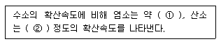
- ① 1/6, ② 1/4
- ① 1/6, ② 1/9
- ① 1/4, ② 1/6
- ① 1/9, ② 1/6
(정답률: 78%)
11. 다음이 설명하는 일반적 기체 법칙은?
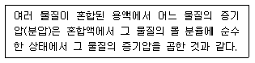
- 라울의 법칙
- 게이-루삭의 법칙
- 헨리의 법칙
- 그레함의 법칙
(정답률: 68%)
12. 탈산소계수 (k1)가 0.20day-1의 하천의 BOD5 농도가 100mg/L이었다. BOD1 은? (단, 상용대수 기준)
- 36mg/L
- 41mg/L
- 46mg/L
- 51mg?
(정답률: 64%)
13. Ca(OH)2500mg/L 용액의 pH는? (단, Ca(OH)2는 완전해리, Ca 원자량：40)
- 11.43
- 11.73
- 12.13
- 12.53
(정답률: 62%)
14. pH 7인 물에서 CO2의 해리상수는 4.3×10-7이고 [HCO3-]＝8.6×10－3몰/L 일 때 CO2농도는?
- 68mg/L
- 78mg/L
- 88mg/L
- 98mg/L
(정답률: 54%)
15. Glucose 500mg/L 가 완전 산화하는데 필요한 이론적 산소요구량은?
- 533mg/L
- 633mg/L
- 733mg/L
- 833mg/L
(정답률: 69%)
16. 하천모델의 종류 중 DO SAG - I, II, III 에 관한 설명으로 틀린 것은?
- 2차원 정상상태 모델이다.
- 점오염원 및 비점오염원이 하천의 용존산소에 미치는 영향을 나타낼 수 있다.
- Streeter-Phelps식을 기본으로 한다.
- 저질의 영향이나 광합성 작용에 의한 용존산소반응을 무시한다.
(정답률: 69%)
17. 1차 반응에 있어 반응 초기의 농도가 100mg/L 이고, 4시간 후에 10mg/L로 감소되었다. 반응 2시간 후의 농도(mg/L)는?
- 17.8
- 24.8
- 31.6
- 42.8
(정답률: 71%)
18. 지하수의 수질을 분석한 결과 다음과 같았다. 이 지하수의 이온강도(I)는?
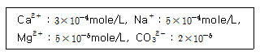
- 0.0099
- 0.00099
- 0.0085
- 0.00085
(정답률: 63%)
19. 어떤 하천수의 분석결과이다. 총경도(mg/L as CaCO3)는?(단, 원자량：Ca 40, Mg 24, Na 23, Sr 88)
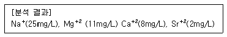
- 약 68
- 약 78
- 약 88
- 약 98
(정답률: 61%)
20. 어느 하천에 다음과 같은 하수가 유입될 때 혼합지점으로부터 10km 하류 지점에서의 용존산소농도는? (단, 혼합수의 K1과 K2(밑이 e)는 0.2/일과 0.3/일이며 20℃에서의 포화산소 농도는 9.2mg/l이다.)
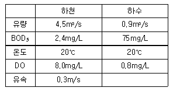
- 약 5.9mg/L
- 약 5.5mg/L
- 약 6.0mg/L
- 약 6.5mg/L
(정답률: 44%)
2과목: 상하수도계획
21. 정수시설인 배수관의 수압에 관한 내용으로 옳은 것은?
- 급수관을 분기하는 지점에서 배수관내의 최대 정수압은 150kPa(약 1.6kgf/cm2)를 초과하지 않아야 한다.
- 급수관을 분기하는 지점에서 배수관내의 최대 정수압은 250kPa(약 2.6kgf/cm2)를 초과하지 않아야 한다.
- 급수관을 분기하는 지점에서 배수관내의 최대 정수압은 450kPa(약 4.6kgf/cm2)를 초과하지 않아야 한다.
- 급수관을 분기하는 지점에서 배수관내의 최대 정수압은 700kPa(약 7.1kgf/cm2)를 초과하지 않아야 한다.
(정답률: 75%)
22. 말굽형 하수관거의 장점으로 옳지 않은 것은?
- 대구경 관거에 유리하며 경제적이다.
- 수리학적으로 유리하다.
- 단면형상이 간단하여 시공성이 우수하다.
- 상반부의 아치작용에 의해 역학적으로 유리하다.
(정답률: 73%)
23. 펌프의 규정토출량 50m3/min, 펌프의 규정회전수 900회/min, 펌프의 규정양정 15m 일 때 비교 회전도는?
- 약 835
- 약 926
- 약 1,048
- 약 1,135
(정답률: 69%)
24. 다음은 정수시설의 시설능력에 관한 내용이다. ( )안에 내용으로 옳은 것은?
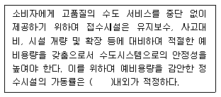
- 70%
- 75%
- 80%
- 85%
(정답률: 66%)
25. 상수처리를 위한 침사지 구조에 관한 내용으로 옳지 않는 것은?
- 표면부하율은 200~500mm/min을 표준으로 한다.
- 지내 평균유속은 2~7m/min을 표준으로 한다.
- 지의 상단높이는 고수위보다 0.6~1m의 여유고를 둔다.
- 지의 유효수심은 3~4m를 표준으로 한다.
(정답률: 59%)
26. 계획오염부하량 및 계획유입수질에 관한 내용으로 옳지 않은 것은?
- 관광오수에 의한 오염부하량은 당일관광과 숙박으로 나누고 각각의 원단위에서 추정한다.
- 영업오수에 의한 오염부하량은 업무의 종류 및 오수의 특징 등을 감안하여 결정한다.
- 생활오수에 의한 오염부하량은 1인1일당 오염부하량 원단위를 기초로 하여 정한다.
- 하수의 게획유입수질은 계획오염부하량을 계획 1일 최대오수량으로 나눈값으로 한다.
(정답률: 71%)
27. 다음은 하수 관거의 접합에 관한 내용이다. ( )안에 옳은 내용은?
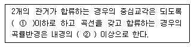
- ① 45° ② 5배
- ① 45° ② 10배
- ① 60° ② 5배
- ① 60° ② 10배
(정답률: 67%)
28. 하수도시설인 우수조정지의 여수토구에 관한 내용으로 옳은 것은?
- 여수토구는 확률년수 10년 강우의 최대우수유출량의 1.2배 이상의 유량을 방류시킬 수 있는 것으로 한다.
- 여수토구는 확률년수 10년 강우의 최대우수유출량의 1.44배 이상의 유량을 방류시킬 수 있는 것으로 한다.
- 여수토구는 확률년수 100년 강우의 최대우수유출량의 1.2배 이상의 유량을 방류시킬 수 있는 것으로 한다.
- 여수토구는 확률년수 100년 강우의 최대우수유출량의 1.44배 이상의 유량을 방류시킬 수 있는 것으로 한다.
(정답률: 56%)
29. 자연부식 중 매크로셀 부식에 해당되는 것은?
- 산소농담(통기차)
- 특수토양부식
- 간섭
- 박테리아부식
(정답률: 61%)
30. 다음 중 막모듈의 열화 내용과 가장 거리가 먼 것은?
- 장기적인 압력부하에 의한 막 구조의 압밀화
- 건조되거나 수축으로 인한 막 구조의 비가역적인 변화
- 원수 중의 고형물이나 진동에 의한 막 면의 상처나 마모, 파단
- 막의 다공질부의 흡착, 석출, 포착 등에 의한 폐색
(정답률: 66%)
31. 해수담수화방식의 상변화방식 중 결정법인 것은?
- 다중효용법
- 투과기화법
- 가스수화물법
- 증기압축법
(정답률: 52%)
32. 하수도 배제방식 중 분류식에 관한 설명으로 옳지 않은 것은?(단, 합류식과 비교 기준)
- 관거오접：없다.
- 관거내 퇴적：관거 내의 퇴적이 적다.
- 처리장으로의 토사유입：토사의 유입이 있지만 합류식 정도는 아니다.
- 건설비 : 오수관거와 우수관거의 2계통을 건설하는 경우는 비싸지만 오수관거만을 건설하는 경우는 가장 저렴하다.
(정답률: 59%)
33. 도수관을 설계할 때 평균유속 기준으로 옳은 것은?
- 자연유하식인 경우, 허용최대한도는 1.5m/s, 도수관의 평균유속은 최소한도 0.3m/s로 한다.
- 자연유하식인 경우, 허용최대한도는 1.5m/s, 도수관의 평균유속은 최소한도 0.6m/s로 한다.
- 자연유하식인 경우, 허용최대한도는 3.0m/s, 도수관의 평균유속은 최소한도 0.3m/s로 한다.
- 자연유하식인 경우, 허용최대한도는 3.0m/s, 도수관의 평균유속은 최소한도 0.6m/s로 한다.
(정답률: 76%)
34. 정수시설인 착수정의 용량 기준은?
- 체류시간 1.5분 이상
- 체류시간 3.0분 이상
- 체류시간 15분 이상
- 체류시간 30분 이상
(정답률: 73%)
35. 정수시설인 완속여과지에 관한 내용으로 옳지 않은 것은?
- 주위벽 상단은 지반보다 60cm 이상 높여 여과지 내로 오염수나 토사 등의 유입을 방지한다.
- 여과속도는 4~5m/d를 표준으로 한다.
- 모래층의 두께는 70~90cm를 표준으로 한다.
- 여과면적은 계획정수량을 여과속도로 나누어 구한다.
(정답률: 53%)
36. 호소, 댐을 수원으로 하는 경우, 취수시설에 관한 설명으로 옳지 않은 것은?
- 취수탑(가동식)：일반적인 철근콘크리트조로 축조하고 수심이 특히 깊은 저수지 등에서 사용된다.
- 취수문：일반적으로 중, 소량 취수에 사용된다.
- 취수틀：구조가 간단하고 시공도 비교적 용이하다.
- 취수틀：수중에 설치되므로 호소의 표면수는 취수할 수 없다.
(정답률: 50%)
37. 우수관거 및 합류관거의 최소관경에 관한 내용으로 옳은 것은?
- 200mm를 표준으로 한다
- 250mm를 표준으로 한다.
- 300mm를 표주으로 한다.
- 350mm를 표준으로 한다.
(정답률: 73%)
38. 하수도시설인 유량조정조에 관한 내용으로 옳지 않은 것은?
- 조의 용량은 체류시간 6시간을 표준으로 한다.
- 유효수심은 3~5m를 표준으로 한다.
- 유량조정조의 유출수는 침사지에 반송하거나 펌프로 일차침전지 혹은 생물반응조에 송수한다.
- 조내에 침전물의 발생 및 부패를 방지하기 위해 교반장치 및 산기장치를 설치한다
(정답률: 60%)
39. 관거 별 계획하수량을 정할 때 고려사항으로 옳지 않은 것은?
- 오수관거에서는 계획시간최대오수량으로 한다.
- 차집관거는 계획시간최대오수량과 계획우수량을 합한 것으로 한다.
- 지역의 실정에 따라 계획하수량에 여유율을 들 수 있다.
- 우수관거에서는 계획우수량으로 한다.
(정답률: 55%)
40. 경사가 2‰인 하수관거의 길이가 6,000m 일 때 상류관과 하류관의 고저차는? (단, 기타 조건은 고려하지 않음)
- 3m
- 6m
- 9m
- 12m
(정답률: 71%)
3과목: 수질오염방지기술
41. 유기물에 의한 최종 BODL 2kg을 안정화시킬 때 이론적으로 발생되는 메탄량은? (단, 유기물은 Glucose로 가정할 것, 완전분해기준)
- 약 0.4kg
- 약 0.5kg
- 약 0.6kg
- 약 0.7kg
(정답률: 48%)
42. 200mg/L의 에탄올(C2H5OH)만을 함유하는 4,000m3/day의 공장폐수를 활성슬러지 공법으로 처리하는 경우에 이론적으로 첨가되어야 하는 질소의 양(kg/day)은? (단, 에탄올은 완전 생물학적으로 분해된다고 가정함 BOD：N＝100：5)
- 약 24
- 약 42
- 약 62
- 약 84
(정답률: 43%)
43. 양이온 교환수지를 이용하여 암모늄이온 9mg/L를 포함하고 있는 물 10,000m3를 처리하고자 한다. 이 교환수지의 교환능력이 100kg CaCO3/m3이라면 필요한 이론적 교환수지의 부피는?
- 1.5m3
- 2.5m3
- 3.5m3
- 4.5m3
(정답률: 41%)
44. 슬러지 내 고형물 무게의 1/3 이 유기물질, 2/3 가 무기물질이며 이 슬러지 함수율은 80%, 유기물질 비중이 1.0, 무기물질 비중은 2.5 라면 슬러지 전체의 비중은?
- 1.072
- 1.087
- 1.095
- 1.112
(정답률: 53%)
45. 하수처리과정에서 소독 방법 중 염소와 자외선 소독의 장단점을 비교할 때 염소소독의 장단점으로 틀린 것은?
- 암모니아 첨가에 의해 결합잔류염소가 형성된다.
- 염소접촉조로부터 휘발성유기물이 생성된다.
- 처리수의 총용존고형물이 감소한다.
- 처리수의 잔류독성이 탈염소과정에 의해 제거되어야 한다.
(정답률: 66%)
46. 어느 1차 반응에 있어서 반응 물질의 농도가 300mg/L이고 반응개시 2시간 후에 30mg/L로 되었다. 반응개시 3시간 후 반응 물질 농도(mg/L)는?
- 7.5
- 9.5
- 11.5
- 15.5
(정답률: 52%)
47. 살수여상 공정으로부터 유출되는 유출수의 부유 물질을 제거하고자 한다. 유출수의 평균 유량은 12,300m3/day, 여과지의 여과속도는 17L/m2ㆍmin이고 4개의 여과지(병렬기준)를 설계하고자 할 때 여과지 하나의 면적은?
- 약 75m2
- 약 100m2
- 약 125m2
- 약 150m2
(정답률: 52%)
48. 직경이 1.0×10-2cm인 원형 입자의 침강속도(m/hr)는?(단, Stokes공식 사용, 물의 밀도＝1.0g/cm3, 입자의 밀도＝2.1g/cm3, 물의 점성계수＝1.0087×10-2g/cmㆍsec)
- 21.4m/hr
- 24.4m/hr
- 28.4m/hr
- 32.4m/hr
(정답률: 46%)
49. 연속회분식(Sequenceing Batch)활성슬러지법의 특징으로 틀린 것은?
- 침전 및 배출공정시 보통의 연속식침전지에 비해 스컴의 잔류 가능성이 낮다.
- 운전방식에 따라 사상균 벌킹을 방지할 수 있다.
- 오수의 양과 질에 따라 포기시간과 침전시간을 비교적 자유롭게 설정할 수 있다.
- 유입오수의 부하변동이 규칙성을 갖는 경우 비교적 안정된 처리를 행할 수 있다.
(정답률: 48%)
50. 지름이 0.⑤mm 이고 비중이 0.6인 기름방울은 비중이 0.8인 기름방울보다 수중에서의 부상속도가 얼마나 더 큰가? (단, 물의 비중은 1.0, 기타 조건은 같다고 함)
- 1.5배
- 2.0배
- 2.5배
- 3.0배
(정답률: 53%)
51. 잉여슬러지를 부상 농축조를 이용하여 농축시키고자 한다. 잉여 슬러지의 부피는 1,000m3/day이고, 이 슬러지의 부유물질 농도는 1.5% 이다. 고형물 부하량이 10kg/m2ㆍhr 이고 하루 24시간 가동되는 부상 농축조로 처리하고자 할 때 필요한 수면적(surface Area)은? (단, 슬러지 비중은 1.0으로 가정함)
- 32.5m2
- 42.5m2
- 52.5m2
- 62.5m2
(정답률: 41%)
52. 유량 4,000m3, 부유물질 농도 220mg/L인 하수를 처리하는 일차침전지에서 발생되는 슬러지의 양은? (단, 슬러지 단위 중량(비중) 1.03, 함수율 94%, 일차침전지 체류시간 2시간, 부유물질 제거효율 60% 기타 조건은 고려하지 않음)
- 6.32m3
- 8.54m3
- 10.72.m3
- 12.53m3
(정답률: 46%)
53. 다음 그림은 하수내 질소, 인을 효과적으로 제거하기 위한 어떤 공법을 나타낸 것인가?
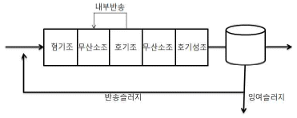
- VIP Process
- A2/O Process
- M-Bardenpho Process
- Phostrip Process
(정답률: 53%)
54. 유입하수의 BOD농도가 200mg/L이고 포기조내 체류시간이 4시간 이며 포기조의 F/M비를 0.3kgBOD/kgMLSS-day로 유지한다고 하면 포기조의 MLSS농도는?
- 2,500mg/L
- 3,000mg/L
- 3,500mg/L
- 4,000mg/L
(정답률: 51%)
55. 인구 8,000명의 도시하수를 RBC(회전원판법)로 처리한다. 평균유입하수량은 380L/capㆍday, 유입 BOD5는 300mg/L, 1차 침전조에서 BOD5는 30% 제거되며, 총 유출 BOD5는 20mg/L, 단수는 4 이다. 실험에서 K는 45L/dayㆍm2이라면 대수적 방법으로 구한 설계 수력학적 부하(Q/A)는? (단, 성능식：
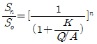
)- 28.1L/dayㆍm2
- 48.0L/dayㆍm2
- 56.2L/dayㆍm2
- 72.6L/dayㆍm2
(정답률: 43%)
56. 포기조 내의 혼합액 1리터를 30분간 정치했을 때 슬러지 용량이 250mL 였다면 슬러지 반송률은 약 몇 % 인가? (단, 유입수 SS 고려하지 않음)
- 23
- 28
- 33
- 38
(정답률: 42%)
57. G＝200/sec, V＝50m3, 교반기 효율 80%, μ＝1.35×10-2g/cmㆍsec일 때 소요동력 P(kW)는?
- 1.43kW
- 2.75kW
- 3.38kW
- 4.12kW
(정답률: 48%)
58. 평균 유입하수량 10,000m3/day인 도시하수처리장의 1차침전지를 설계하고자 한다. 1차침전지의 표면부하율을 50m3/m2-day 로 하여 원형침전지를 설계한다면 침전지의 직경은?
- 약 14m
- 약 16m
- 약 18m
- 약 20m
(정답률: 54%)
59. 유량이 3,000m3/일이고, BOD농도가 400mg/L인 폐수를 활성슬러지법으로 처리하고 있다. 다음 조건을 이용한 내호흡율(Kd)은?
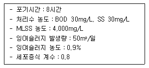
- 약 0.⑤2/일
- 약 0.086/일
- 약 0.123/일
- 약 0.183/일
(정답률: 36%)
60. 하수고도처리를 위한 A/O공정의 특징으로 옳은 것은? (단, 일반적인 활성슬러지공법과 비교 기준)
- 혐기조에서 인의 과잉흡수가 일어난다.
- 폭기조 내에서 탈질이 잘 이루어진다.
- 잉여슬러지 내의 인 농도가 높다.
- 표준 활성슬러지공법의 반응조 전반 10% 미만을 혐기반응조로 하는 것이 표준이다.
(정답률: 56%)
4과목: 수질오염공정시험기준
61. 유기인을 용매추출/기체크로마토그래피법으로 측정할 경우, 각 성분별 정량한계는?
- 0.5mg/L
- 0.⑤mg/L
- 0.0⑤mg/L
- 0.00⑤mg/L
(정답률: 39%)
62. 4각 웨어로 유량을 측정하는 계산식으로 옳은 것은? (단, Q：유량(m3/min), K：유량계수, b：절단의 폭(m), h：웨어의 수두(m))
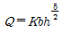
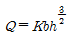
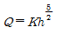
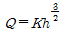
(정답률: 60%)
63. 시료채취시 유의사항으로 옳지 않는 것은?
- 유류 또는 부유물질 등이 함유된 시료는 시료의 균일성이 유지될 수 있도록 채취해야 하며 침전물 등이 부상하여 혼입되어서는 안된다.
- 퍼클로레이트를 측정하기 위한 시료를 채취할 때 시료의 공기접촉이 없도록 시료병에 가득 채운다.
- 시료채취량은 시험항목 및 시험횟수에 따라 차이가 있으니 보통 3～5L 정도이어야 한다.
- 휘발성유기화합물 분석용 시료를 채취할 때에는 뚜껑의 격막을 만지지 않도록 주의하여야 한다.
(정답률: 63%)
64. 총칙의 내용 중 온도에 관한 내용으로 옳지 않은 것은?
- 찬 곳은 따로 규정이 없는 한 0～15℃의 곳을 뜻한다.
- 냉수는 15℃ 이하를 말한다.
- 온수는 60～80℃를 말한다.
- 상온은 15～25℃를 말한다.
(정답률: 64%)
65. 시료의 최대보존기간이 다른 측정 항목은?
- 시안
- 불소
- 염소이온
- 노말헥산추출물질
(정답률: 53%)
66. 공장폐수 및 하수의 관내 유량측정을 위한 측정장치 중 관내의 흐름이 완전히 발달하여 와류에 영향을 받지 않고 실질적으로 직선적인 흐름을 유지하기 위해 난류 발생의 원인이 되는 관로상의 점으로부터 충분히 하류지점에 설치하여야 하는 것은?
- 오리피스
- 벤튜리미터
- 피토우관
- 자기식 유량측정기
(정답률: 56%)
67. 다음의 표준 용액 중 pH가 가장 높은 것은? (단, 0℃ 기준)
- 탄산염 표준용액
- 붕산염 표준용액
- 수산염 표준용액
- 프탈산염 표준용액
(정답률: 54%)
68. 전기전도도의 정밀도 기준으로 옳은 것은?
- 측정값의 % 상대표준편차(RSD)로 계산하여 측정값이 15% 이내 이어야 한다.
- 측정값의 % 상대표준편차(RSD)로 계산하여 측정값이 20% 이내 이어야 한다.
- 측정값의 % 상대표준편차(RSD)로 계산하여 측정값이 25% 이내 이어야 한다.
- 측정값의 % 상대표준편차(RSD)로 계산하여 측정값이 30% 이내 이어야 한다.
(정답률: 49%)
69. 분원성 대장균군을 측정하기 위한 시료의 보존방법 기준으로 옳은 것은?
- 저온(4℃ 이하)
- 저온(10℃ 이하)
- 4℃ 보관
- 4℃ 냉암소에 보관
(정답률: 43%)
70. 수질오염공정시험기준 상 양극벗김전압전류법을 적용하여 측정하는 금속류는?
- 아연
- 주석
- 카드뮴
- 크롬
(정답률: 59%)
71. 수질오염공정시험기준 상 탁도 측정에 관한 설명으로 옳지 않은 것은?
- 파편과 입자가 큰 침전이 존재하는 시료를 빠르게 침전시킬 경우, 탁도값이 낮게 측정된다.
- 물에 색깔이 있는 시료는 잠재적으로 측정값이 높게 분석된다.
- 시료 속에 거품은 빛을 산란시키고 높은 측정값을 나타낸다.
- 탁도를 측정하기 위해서는 탁도계를 이용하여 물의 흐림 정도를 측정한다.
(정답률: 58%)
72. 다음은 분원성 대장균군-막여과법의 측정방법이다. ( )안에 옳은 내용은?
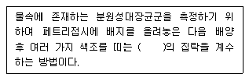
- 황색
- 녹색
- 적색
- 청색
(정답률: 61%)
73. 시안을 자외선/가시선 분광법으로 분석할 때 아세트산아연용액을 넣어 제거하는 시료 내 물질은?
- 황화합물
- 철, 망간
- 잔류염소
- 질소화합물
(정답률: 44%)
74. 수질오염공정시험기준 상 냄새 측정에 관한 내용으로 옳지 않은 것은?
- 물속의 냄새를 측정하기 위하여 측정자의 후각을 이용하는 방법이다.
- 잔류염소의 냄새는 측정에서 제외한다.
- 냄새 역치는 냄새를 감지할 수 있는 최대 희석배수를 말한다.
- 각 판정요원의 냄새의 역치를 산술평균하여 결과를 보고한다.
(정답률: 69%)
75. 자외선/가시선 분광법을 적용하여 음이온계면활성제를 측정할 때 음이온계면활성제가 메틸렌블루와 반응하여 생성된 청색의 착화합물 추출에 사용되는 것은?
- 사염화탄소
- 헥산
- 클로로폼
- 아세톤
(정답률: 61%)
76. 다음은 구리를 자외선/가시선 분광법으로 정량하는 방법이다. ( )안에 옳은 내용은?
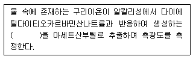
- 적색의 킬레이트 화합물
- 청색의 킬레이트 화합물
- 적갈색의 킬레이트 화합물
- 황갈색의 킬레이트 화합물
(정답률: 51%)
77. 배출허용기준 적합여부 판정을 위한 시료채취 기준으로 옳은 것은? (단, 자동시료채취기를 사용하여 복수시료채취)
- 2시간 이내에 30분 이상 간격으로 2회 이상 채취하여 일정량의 단일 시료로 한다.
- 4시간 이내에 30분 이상 간격으로 2회 이상 채취하여 일정량의 단일 시료로 한다.
- 6시간 이내에 30분 이상 간격으로 2회 이상 채취하여 일정량의 단일 시료로 한다.
- 8시간 이내에 30분 이상 간격으로 2회 이상 채취하여 일정량의 단일 시료로 한다.
(정답률: 63%)
78. 다음은 자외선/가시선 분광법으로 아연을 정량하는 방법이다. ( )안에 옳은 내용은?
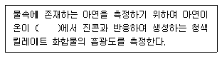
- pH 약 4
- pH 약 9
- pH 약 10
- pH 약 12
(정답률: 66%)
79. 다음은 알킬수은을 기체크로마토그래피로 측정하는 방법이다. ( )안에 내용으로 옳은 것은?
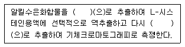
- 아세톤
- 벤젠
- 메탄올
- 사염화탄소
(정답률: 59%)
80. 다음 총칙에 대한 설명 중 옳은 것은?
- “항량으로 될 때까지 건조한다”라 함은 같은 조건에서 1시간 더 건조할 때 전후 무게차가 g당 0.1mg 이하일 때를 말한다.
- “감압 또는 진공”이라 함은 따로 규정이 없는 한 15mmH2O 이하를 말한다.
- “기밀용기”라 함은 취급 또는 저장하는 동안에 밖으로부터의 공기 또는 다른 가스가 침입하지 아니하도록 내용물을 보호하는 용기를 말한다.
- “방울수”라 함은 0℃에서 정제수 20방울을 적하할 때 그 부피가 약 1mL 되는 것을 뜻한다.
(정답률: 54%)
5과목: 수질환경관계법규
81. 폐수처리업을 등록할 수 없는 결격사유로 틀린 것은?
- 폐수처리업의 등록이 취소된 후 2년이 지나지 아니한 자
- 파산신고를 받고 복권된 지 2년이 지나지 아니한 자
- 피성년후견인
- 피한정후견인
(정답률: 48%)
82. 비점오염저감시설 중 장치형 시설에 해당되는 것은?
- 저류형 시설
- 침투형 시설
- 생물학적 처리형 시설
- 인공습지형 시설
(정답률: 50%)
83. 다음 중 법에서 규정하고 있는 기타 수질오염원의 기준으로 틀린 것은?
- 취수능력 10m3/일 이상인 먹는 물 제조시설
- 면적 30,000m2 이상인 골프장
- 면적 1,500m2 이상인 자동차 폐차장 시설
- 면적 200,000m2 이상인 복합물류터미널 시설
(정답률: 56%)
84. 법에서 사용하는 용어의 뜻으로 틀린 것은?
- ‘점오염원’ 이란 폐수처리시설, 하수발생시설, 축사 등 특정장소에서 특정하게 수질오염물질을 배출하는 배출원을 말한다.
- ‘기타수질오염원’ 이란 점오염원 및 비점오염원으로 관리되지 아니하는 수질오염물질을 배출하는 시설 또는 장소로서 환경부령으로 정하는 것을 말한다.
- ‘강우유출수’ 란 비점오염원의 수질오염물질이 섞여 유출되는 빗물 또는 눈 녹은 물 등을 말한다.
- ‘수질오염물질’ 이란 수질오염의 요인이 되는 물질로서 환경부령으로 정하는 것을 말한다.
(정답률: 36%)
85. 사업자 및 배출시설과 방지시설에 종사하는 사람은 배출시설과 방지시설의 정상적인 운영, 관리를 위한 환경기술인의 업무를 방해하여서는 아니 되며, 그로부터 업무 수행에 필요한 요청을 받았을 때에는 정당한 사유가 없으면 이에 따라야 한다. 이를 위반하여 환경기술인의 업무를 방해하거나 환경기술인의 요청을 정당한 사유없이 거부한 자에 대한 벌칙기준은?
- 100만원 이하의 벌금
- 200만원 이하의 벌금
- 300만원 이하의 벌금
- 500만원 이하의 벌금
(정답률: 56%)
86. 해당 배출부과금의 부과기간의 시작일 전 1년 6개월간 방류수수질기준을 초과하는 수질오염물질을 배출하지 아니한 사업자에게 기본배출부과금 100만원이 부과된 경우, 감경 되는 금액은?
- 20만원
- 30만원
- 40만원
- 50만원
(정답률: 44%)
87. 수질오염방제센터에서 수행하는 사업과 가장 거리가 먼 것은?
- 수질오염 수역 수계ㆍ호소 등의 관리 우선순위 및 관리대책
- 수질오염사고에 대비한 장비, 자재, 약품 등의 비치 및 보관을 위한 시설의 설치운영
- 수질오염 방제기술 관련 교육ㆍ훈련, 연구개발 및 홍보
- 공공수역의 수질오염사고 감시
(정답률: 28%)
88. 다음은 과징금 처분에 관한 내용이다. ( )안에 옳은 내용은?(오류 신고가 접수된 문제입니다. 반드시 정답과 해설을 확인하시기 바랍니다.)
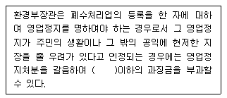
- 1억
- 2억
- 3억
- 5억
(정답률: 47%)
89. 수질 및 수생태계 환경기준 중 해역의 생활환경 항목인 용매추출유분(mg/L) 기준값은?
- 0.01 이하
- 0.1 이하
- 1.0 이하
- 10.0 이하
(정답률: 40%)
90. 비점오염저감계획서에 포함되어야 하는 사항과 가장 거리가 먼 것은?
- 비점오염원 저감방안
- 비점오염원 관리 및 모니터링 방안
- 비점오염저감시설 설치계획
- 비점오염원 관련 현황
(정답률: 44%)
91. 비점오염원관리지역의 지정기준으로 옳은 것은?
- 인구 5만명 이상인 도시로서 비점오염원관리가 필요한 지역
- 인구 10만명 이상인 도시로서 비점오염원관리가 필요한 지역
- 인구 50만명 이상인 도시로서 비점오염원관리가 필요한 지역
- 인구 100만명 이상인 도시로서 비점오염원관리가 필요한 지역
(정답률: 55%)
92. 정당한 사유 없이 공공수역에 분뇨, 가축분뇨, 동물의 사체, 폐기물(지정폐기물 제외) 또는 오니를 버리는 행위를 하여서는 아니 된다. 이를 위반하여 분뇨 가축분뇨 등을 버린 자에 대한 벌칙 기준은?
- 6월 이하의 징역 또는 5백만원 이하의 벌금
- 1년 이하의 징역 또는 1천만원 이하의 벌금
- 2년 이하의 징역 또는 1천5백만원 이하의 벌금
- 3년 이하의 징역 또는 2천만원 이하의 벌금
(정답률: 56%)
93. 다음은 호소수 이용 상황 등의 조사 측정 등에 관한 내용이다. ( ) 안에 옳은 내용은?
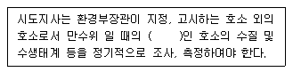
- 면적이 30만 제곱미터 이상
- 면적이 50만 제곱미터 이상
- 용적이 30만 세제곱미터 이상
- 용적이 50만 세제곱미터 이상
(정답률: 49%)
94. 위임업무 보고사항 중 “골프장 맹ㆍ고독성 농약 사용 여부 확인 결과”의 보고횟수 기준으로 옳은 것은?
- 수시
- 연 4회
- 연 2회
- 연 1회
(정답률: 54%)
95. 다음은 폐수종말처리시설의 유지, 관리기준에 관한 내용이다. ( )안에 옳은 내용은?
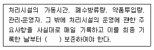
- 1년간
- 2년간
- 3년간
- 5년간
(정답률: 47%)
96. 물놀이 등의 행위제한 권고기준 중 대상 행위가 ‘어패류 등 섭취’ 인 경우의 권고기준으로 옳은 것은?
- 어패류 체내 총 카드뮴(Cd)：0.3(mg/kg) 이상
- 어패류 체내 총 카드뮴(Cd)：0.03(mg/kg) 이상
- 어패류 체내 총 수은(Hg)：0.3(mg/kg) 이상
- 어패류 체내 총 수은(Hg)：0.03(mg/kg) 이상
(정답률: 39%)
97. 오염총량관리기본방침에 포함되어야 할 사항과 가장 거리가 먼 것은?
- 오염원의 조사 및 오염부하량 산정방법
- 오염총량관리시행 대상 유역 현황
- 오염총량관리의 대상 수질오염물질 종류
- 오염총량관리의 목표
(정답률: 44%)
98. 수질 및 수생태계 환경기준에서 하천에서의 사람의 건강보호 기준 중 기준값이 ‘검출되어서는 안 됨(검출한계 0.01mg/L)’ 에 해당되는 항목은?
- 카드뮴
- 시안
- 비소
- 유기인
(정답률: 37%)
99. 조류경보 단계인 ‘경계경보’ 발령시 조치사항이 아닌 것은?
- 정수의 독소분석 실시
- 황토 등 흡착제 살포 등을 이용한 조류제거 조치 실시
- 주변 오염원에 대한 단속 강화
- 어패류 어획, 식용 및 가축방목의 자제 권고
(정답률: 49%)
100. 폐수배출시설에서 배출되는 수질오염물질의 배출 허용 기준으로 옳은 것은? (단, 1일폐수배출량 2,000m3 미만인 사업장, 특례지역, 단위：mg/L)(관련 규정 개정전 문제로 여기서는 기존 정답인 1번을 누르면 정답 처리됩니다. 자세한 내용은 해설을 참고하세요.)
- BOD 30 이하, COD 40 이하, SS 30 이하
- BOD 40 이하, COD 50 이하, SS 40 이하
- BOD 80 이하, COD 90 이하, SS 80 이하
- BOD 120 이하, COD 130 이하, SS 120 이하
(정답률: 49%)